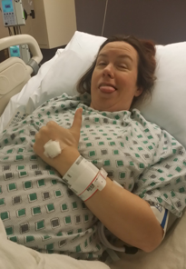

The Glory of Ice Chips
Thursday, January 21, 2016
You know how they say the instant you hold your child in your arms for the first time your life changes? Well...maybe the second time. The first time I was so out of it and overwhelmed, it didn't really occur to me that this was my child that some kind nurse had put into my exhausted arms and was still kind of holding in case I wasn't up to the task. It was more like: Oh look, a baby. Well isn't that nice.
Second time? Bam. Nothing can prepare you for the sudden feeling that you would claw the face off of anyone who even suggests that your child is not the most adorable thing in the world. Lucky for the hospital staff, premature babies tend to be even cuter than normal babies. But that feeling is quite powerful and pretty surreal and I really did not think it would happen to me.
 See that bandage on the back of my hand? It's one of 8 places I got stuck with a needle over the course of about 4 days. My veins are troublesome for people in the blood drawing business. More so when I haven't been allowed to drink water for 14 hours. So let's back up 14 hours...
January the 14th - 32 weeks and 6 days
4:20am. I'm awoken by the feeling of fluid pouring from between my legs. Rush to the bathroom faster than I've been able to walk in the past few months due to a large abdomen. Good thing amniotic fluid doesn't stain carpet.
4:21am. Sean? Call the doctor, I think my water broke. This is too soon. Wow, that's a lot of fluid.
4:25am. Wait, I can't pack a bag? We have to go to the hospital right this second? Oh, alright. I guess that's okay. Wow, look how fast Sean drives when no one else is on the road!
4:45am. Well I'm glad that second gush of amniotic fluid waited until I got out of the car to arrive. Wow, my pants are soaked. This is awkward. I hope they don't mind I'm dripping in their hallway.
5:00am. I'm having a contraction? Huh. Don't feel anything. Why is the doctor startled by the amount of fluid coming out of me? Doesn't he do this all the time?
5:30am. Well this is a nicer room than triage. But I'm stuck in bed from now until the baby comes? And you're hoping for two weeks?! Damn. Ooh, ice chips.
7:00am. This magnesium sulfate stuff stinks. I'm so freaking hot. Isn't this just epsom salt? At least I'm not vomiting like my sister did. Ooh, ice chips.
7:10am. You're sticking that gigantic needle of steroids where? My thigh muscle? Son of a -! Ooh, ice chips.
7:20am. Hello sonogram technician. You don't need to explain this to me, I've have like a dozen of these. Didn't you know I'm of "advanced maternal age?" Seriously, that's what they call anyone pregnant over age 35. Yes yes, there's his head and his heart. Very cool. You're keeping me from my ice chips. My amniotic fluid level is normal? Really, cause I swear I've lost like a gallon. Come to think of it, my abdomen feels a lot better now.
8:00am. Thank you for turning down the magnesium, I'm feeling much better now. So...I guess I sleep for about 23 hours now? Just a few more ice chips for the road.
9:00am. Drowsy.
10:00am. Drowsy.
11:00am. Drowsy.
12:00pm. Ice chips.
1:00pm. Drowsy.
2:00pm. Drowsy.
3:00pm. Blood work eh? Good luck with that. Take two? Okay, but that seems like a strange spot to try and get blood. Bloody hell it hurts when you wiggle it around like that.
3:10pm. Okay, second tech. Seriously? Two of you can't get blood out of me? Well why the heck didn't you prick my finger and squeeze blood out after the first failed attempt?
4:00pm. Shouldn't my contractions be getting further apart instead of closer together? Damn, up with the magnesium again?
5:00pm. Hey, these are getting pretty frequent. And kind of uncomfortable.
6:00pm. Okay, these kind of hurt. Can you get a doctor in here?
6:30pm. Okay, I really need a doctor. These ice chips are doing nothing for me anymore. And something's trying to leave my body.
6:35pm. Doctor! Finally! Pain! No drugs? Crowning? What?
6:45pm. Whew, I'm beat. Wait, what the hell just happened? Where are my ice chips? What's that crying? What's the big bloody bag looking thing you put in that big tupperware container? Hey, those stitches you're putting in kind of hurt, can I get some drugs now? Wow, look at all that blood. Oh look, a baby. Well isn't that nice. Can I have some more ice chips?